Magdalena del Mar · Lima · 14 años
Medicina estética en Lima, con evaluación médica
Corporal, rostro y piel. Procedimientos ambulatorios y tratamientos por sesiones.
Lo más pedido: MELA en Lima · Lipoláser en Lima · Fibrosis post lipo
- Evaluación virtual
- Cuotas sin intereses
- Ambulatorio
¿Qué quieres mejorar?
Elige una zona y te mostramos las opciones.
 LipoláserRetira la grasa localizada y el láser ayuda a tensar la piel.desde S/2,500 →
LipoláserRetira la grasa localizada y el láser ayuda a tensar la piel.desde S/2,500 →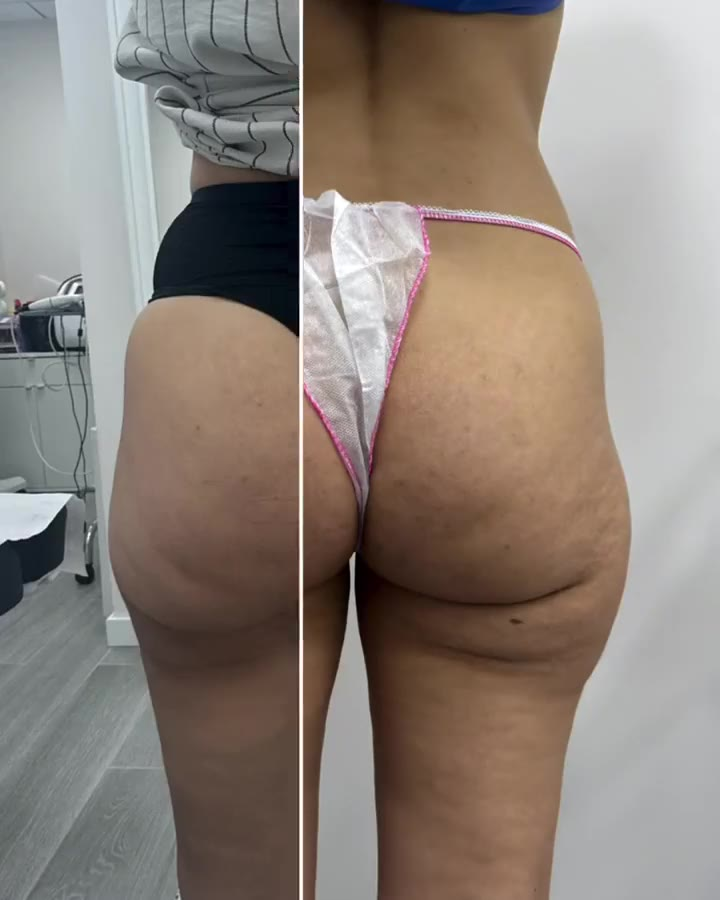
MELAMini lipo ambulatoria para la grasa que no se va con dieta ni ejercicio.desde S/1,500 →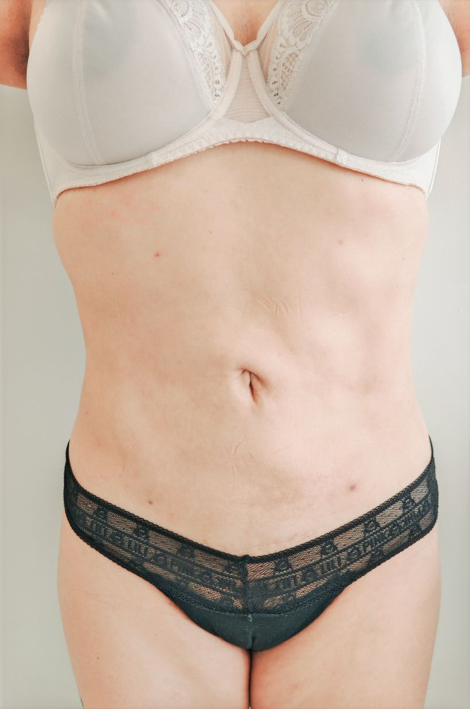
Fibrosis post lipo¿Zonas duras, bolitas o piel irregular después de tu lipo? Tiene tratamiento.ver promoción →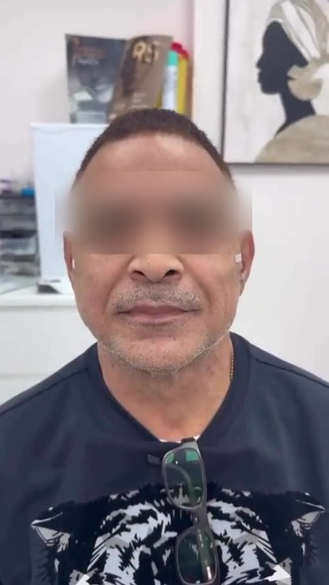
EndoliftingLáser bajo la piel para la flacidez y el contorno, sin cirugía.ver promoción →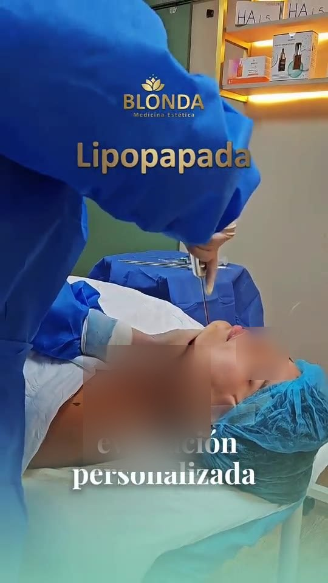
LipopapadaRetira la grasa bajo el mentón y define el contorno del rostro.ver promoción →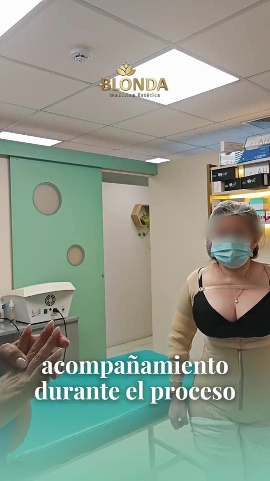
Plan Blonda FitPrograma médico para bajar de peso, con seguimiento semana a semana.ver promoción →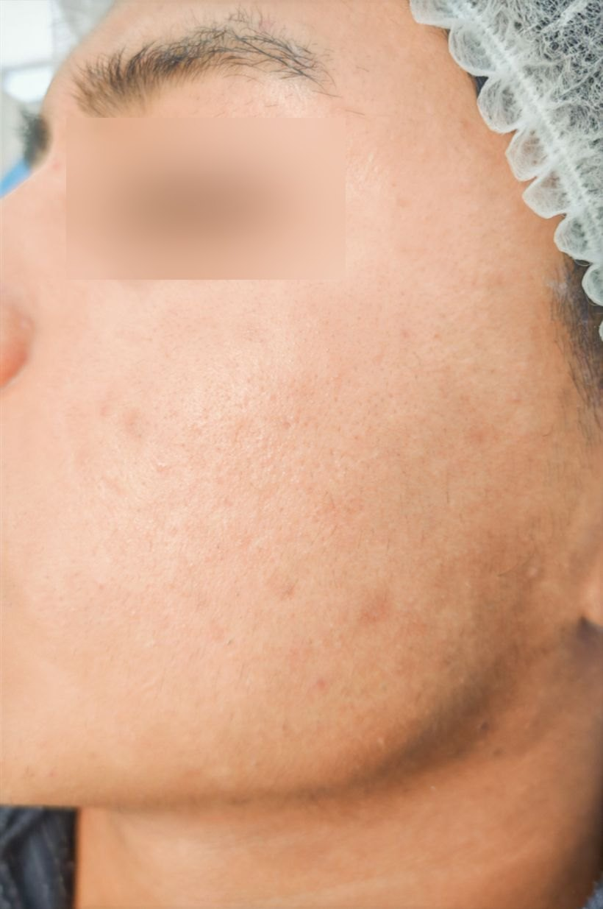
Láser CO2Para secuelas de acné, cicatrices y textura irregular del rostro.ver promoción → Láser para manchasManchas solares, melasma y manchas hormonales, con láser Q-Switch.ver promoción →
Láser para manchasManchas solares, melasma y manchas hormonales, con láser Q-Switch.ver promoción → Hilos tensoresLevantan y definen el óvalo del rostro, sin cirugía.ver promoción →
Hilos tensoresLevantan y definen el óvalo del rostro, sin cirugía.ver promoción →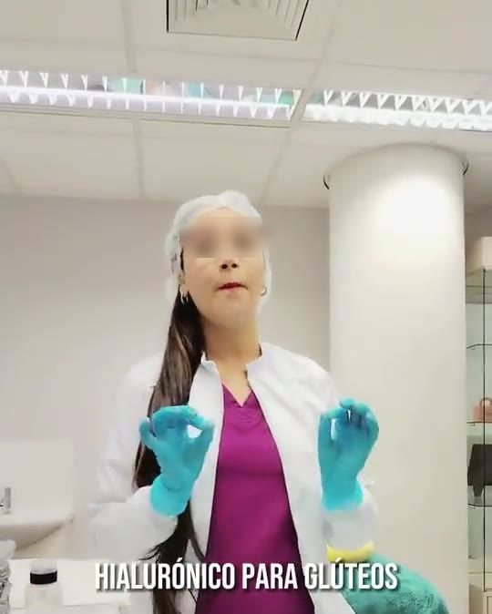
Hialurónico en glúteosProyección y forma sin cirugía ni implantes.ver promoción →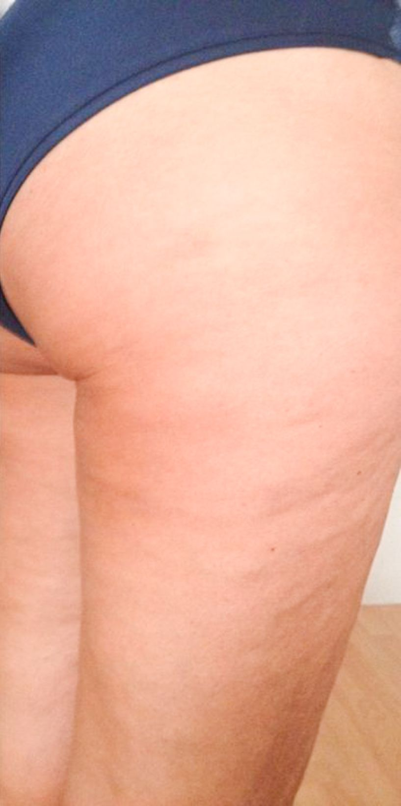
CelulitisLáser y protocolo combinado para la piel de naranja.ver promoción → Rostro y pielManchas, cicatrices de acné, textura y flacidez del rostro.ver tratamientos → Reductores y celulitisMedidas, firmeza y celulitis, sin cirugía y por sesiones.ver tratamientos →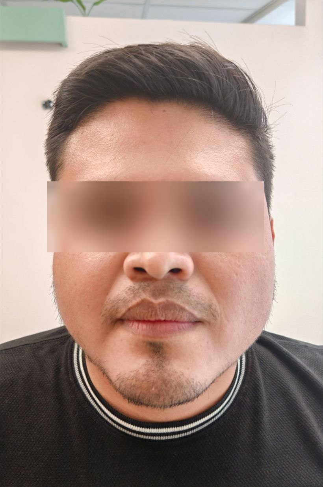
Rellenos y rejuvenecimientoRostro más definido, volumen natural y una piel más firme.ver tratamientos →Antes y después
Pacientes de Blonda. Cada caso es distinto.
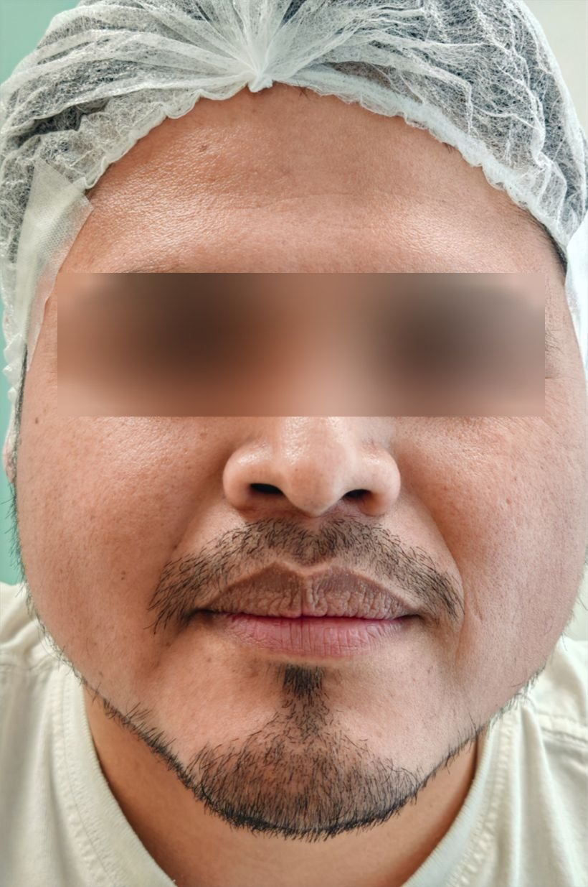
AntesAfinamiento facial
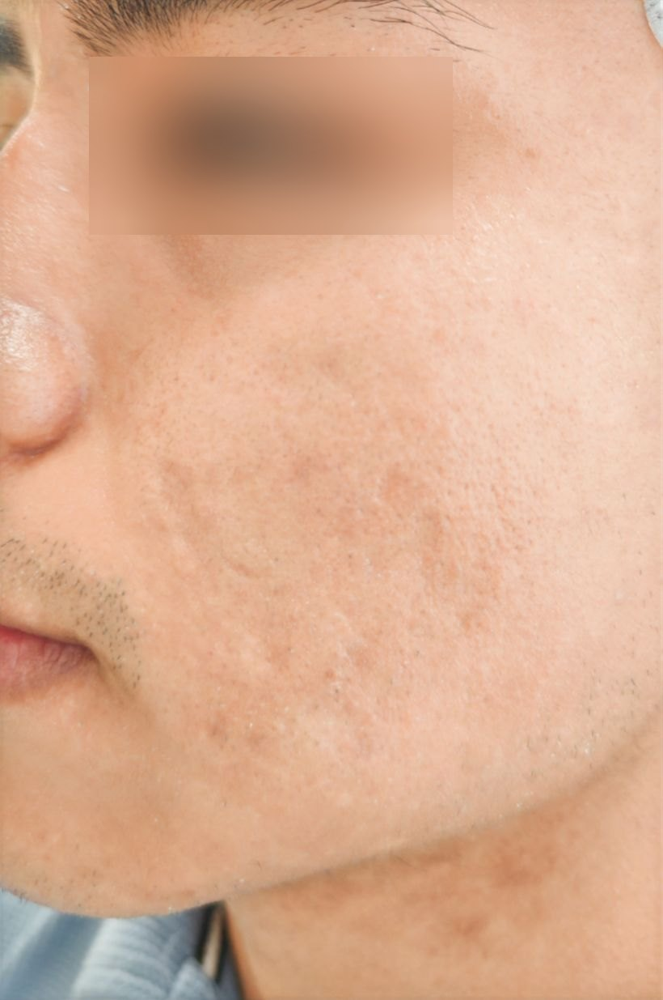
AntesLáser CO2 · acné
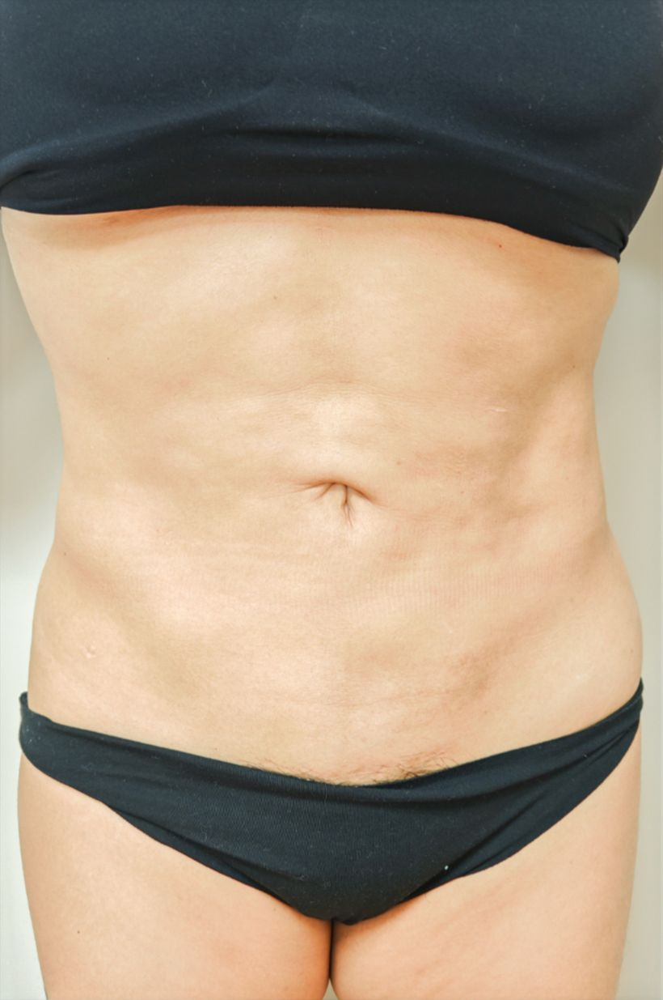
AntesFibrosis post lipo
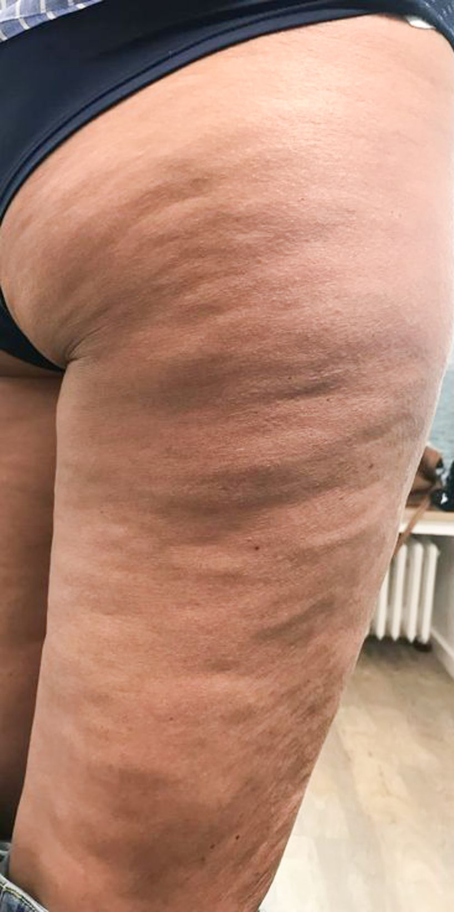
AntesCelulitis

En video
Así trabajamos en Blonda
Promoción del mes
Tu cambio, a tu ritmo
Cada mes tenemos una promoción distinta. Escríbenos, cuéntanos qué zona quieres mejorar y te enviamos tu precio especial con tu plan de pagos.
Quiero mi promoción- Evaluación médicaPresencial o virtual, se descuenta de tu tratamiento.
- Cuotas sin interesesAbonos semanales o quincenales, hasta 3 meses.
- Promoción del mesPrecio especial por tiempo limitado, según tu zona.
Cómo es el proceso
- EvaluaciónPresencial o virtual. Se descuenta de tu tratamiento.
- Separas tu fechaCon un abono, o en cuotas hasta 3 meses.
- ProcedimientoAmbulatorio, con anestesia local.
- SeguimientoControles y cuidados después.
Dónde estamos
Magdalena del Mar · a 1 cuadra del C.C. Real Plaza Salaverry. Te enviamos la ubicación al confirmar tu cita.
Lun–vie 10:00 a.m.–7:00 p.m. · Sáb 9:00 a.m.–6:00 p.m.
¿Vives en provincia? Tu evaluación puede ser virtual.
Preguntas frecuentes
¿La evaluación tiene costo?
Tiene un costo simbólico que se descuenta al 100% de tu tratamiento. Escríbenos y te contamos la promoción del mes.
¿Puede ser virtual?
Sí, si vives en provincia. El procedimiento es presencial en Magdalena del Mar.
¿Hay que quedarse internada?
No. Los procedimientos son ambulatorios, con anestesia local.
¿Cuándo vuelvo a trabajar?
En general al día siguiente. La doctora te da indicaciones según tu actividad.
Agenda tu evaluación médica
Evaluación médica presencial o virtual · se descuenta de tu tratamiento · promoción del mes